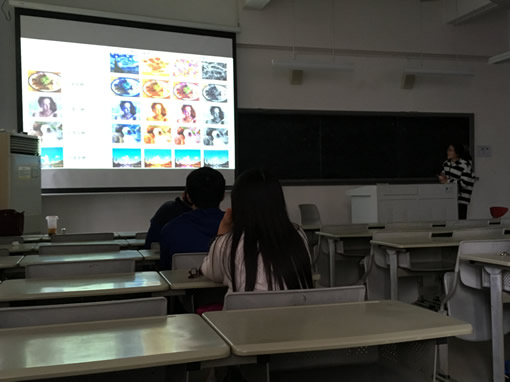
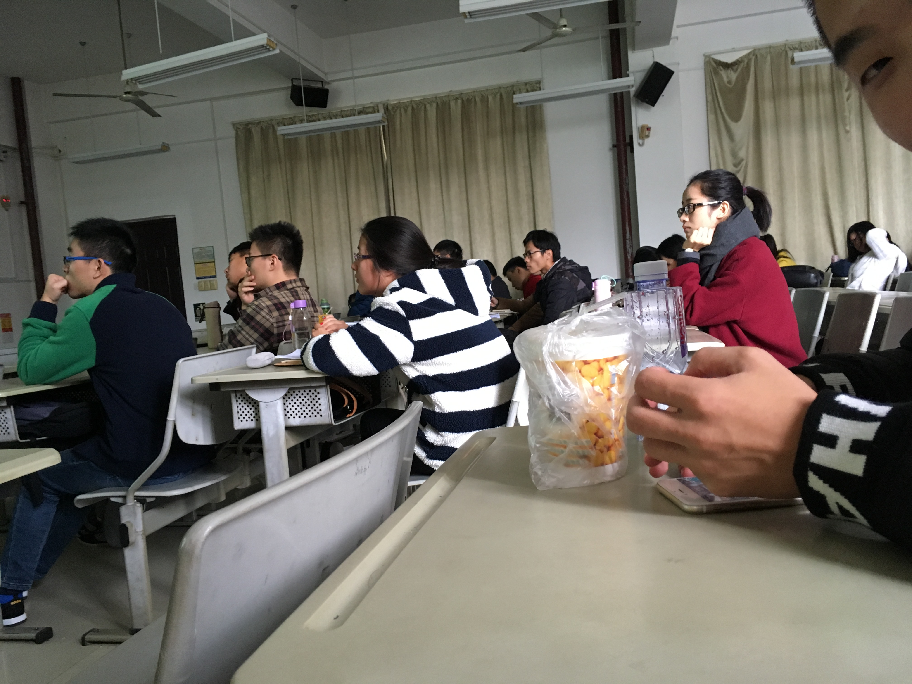
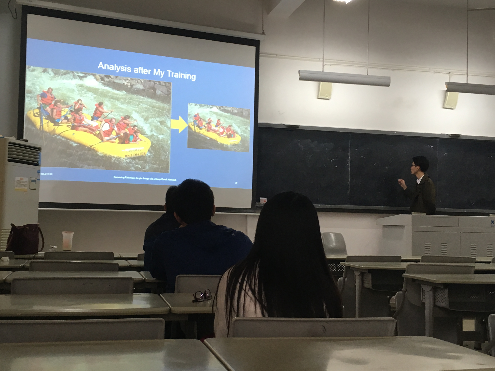

2016年12月30日，我实验室2016级研究生借数字图像处理课程展示环节的机会，向课上的研究生及本科生展示我实验室部分研究成果及研究领域相关发展现状。我实验室负责人暨厦门大学通信工程系副主任丁兴号教授、博导，我实验室黄悦副教授以及通信2016级研究生和2014级本科生等50余人在现场观看了汇报展示。

本次汇报展示以机器学习领域最新成果为主题，向课上的研究生及本科生以ppt汇报的形式展示我实验室部分研究成果及研究领域相关发展现状，反映机器学习及深度学习领域最新的进展，同时给予其他实验室研究生或本科生展示自己作品成果的机会。我实验室本次展示的2016级研究生（按展示顺序）分别是：何福金、唐圳、舒炳林、余宪、陈云舒、樊志文、吴华锋、王继天。

本次汇报展示节目由我实验室2016级通信研究生就本人当前研究方向与成果自制汇报ppt，内容丰富，形式多样，巧妙地结合图片表格数据等元素进行讲解，精彩纷呈。按照事先安排的顺序，8个展示人员依次汇报开放实验成果，成果涉及到对抗生成网络、语言模型以及LSTM模型、图像目标跟踪、faster-rcnn、风格迁移、图像去雾、图像分割以及迁移神经网络等8项最新相关领域的动态，成果形式丰富多样，包括幻灯片报告，视频展示和程序展示。

汇报过程中上，两位老师认真倾听汇报，丁兴号教授在汇报过程中就展示成员演说的研究领域分别进行了重要而简明的阐述与解释，使其他在座人员能够更加容易了解到汇报人员的展示成果。
汇报ppt下载：
何福金：download
唐圳：download
舒炳林：download
余宪：download
陈云舒：download
樊志文：download
吴华锋：download
王继天：download